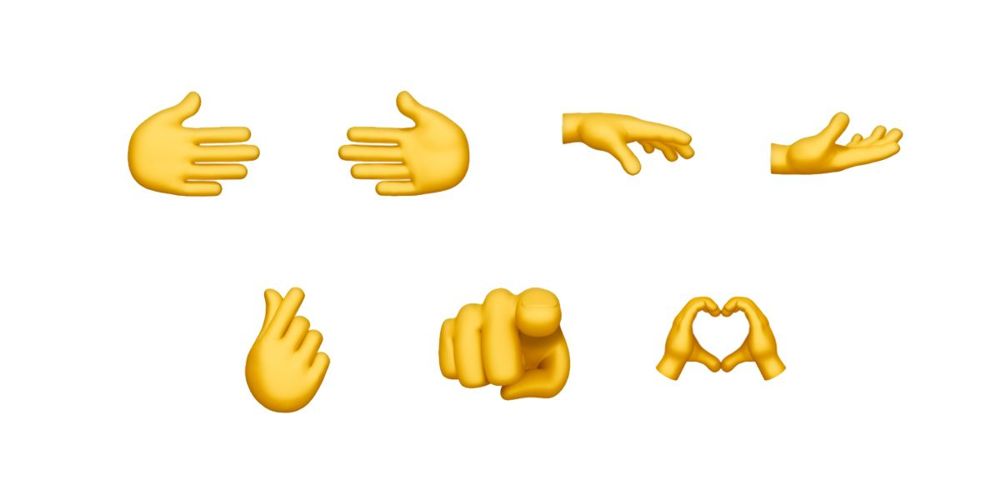

The pinky promise emoji was created to encapsulate the essence of a timeless gesture – the act of making a pinky promise. This simple yet powerful gesture, often shared between friends, symbolizes sincerity, trust, and unwavering commitment. Recognized and practiced internationally, the pinky promise transcends cultural boundaries, representing an unbreakable vow. By introducing the pinky promise emoji, this heartfelt promise is immortalized in the digital realm, enabling individuals worldwide to express their intentions and strengthen bonds through a single, universally understood symbol.
"I promise to always be there for you. "
"You can tell me anything! "
Idea
-

The existing emoji set for hand gestures touch upon two-way interactions, such as the handshake. I wanted to add one more to the list for a gesture that is commonly used.
Process
Using ProCreate, I sketched out the emoji due to limitations with AI on understanding how to render hands and fingers.